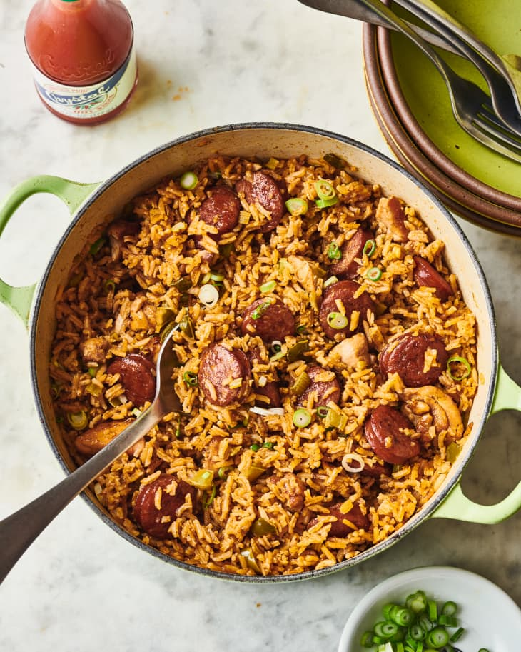

Jambalaya

Description
Jambalaya is a flavorful and hearty one-pot dish originating from Louisiana, influenced by both Spanish and French cuisines. It features a mix of long-grain rice, vegetables, and a variety of proteins such as andouille sausage, chicken, and shrimp. Cooked in a rich, spicy broth with Creole seasoning, jambalaya is a perfect blend of different flavors and textures, making it a popular choice for gatherings and celebrations.
Ingredients
- Long-grain white rice
- Onion
- Bell pepper
- Celery
- Garlic
- Canned diced tomatoes
- Chicken broth
- Andouille sausage
- Boneless skinless chicken thighs
- Shrimp
- Creole seasoning
- Cayenne pepper
- Bay leaves
- Olive oil
- Salt
- Black pepper
- Green onions
- Fresh parsley
Steps
- Heat olive oil in a large Dutch oven or heavy-bottomed pot over medium heat.
- Add diced andouille sausage and cook until browned, then remove and set aside.
- In the same pot, add diced chicken thighs and cook until browned, then remove and set aside with the sausage.
- Add onions, bell peppers, and celery to the pot, cooking until softened.
- Stir in minced garlic and cook for an additional 1-2 minutes.
- Add the Creole seasoning, cayenne pepper, salt, and black pepper, stirring well to combine.
- Stir in the canned diced tomatoes and chicken broth, then bring to a simmer.
- Return the cooked sausage and chicken to the pot, along with the bay leaves, and simmer for 15-20 minutes.
- Stir in the long-grain white rice, cover, and cook for another 20-25 minutes or until the rice is cooked and has absorbed most of the liquid.
- Add the shrimp and cook for an additional 5-7 minutes, or until the shrimp is cooked through.
- Remove the pot from heat and discard the bay leaves.
- Fluff the jambalaya with a fork and adjust seasonings if needed.
- Garnish with chopped green onions and fresh parsley before serving.